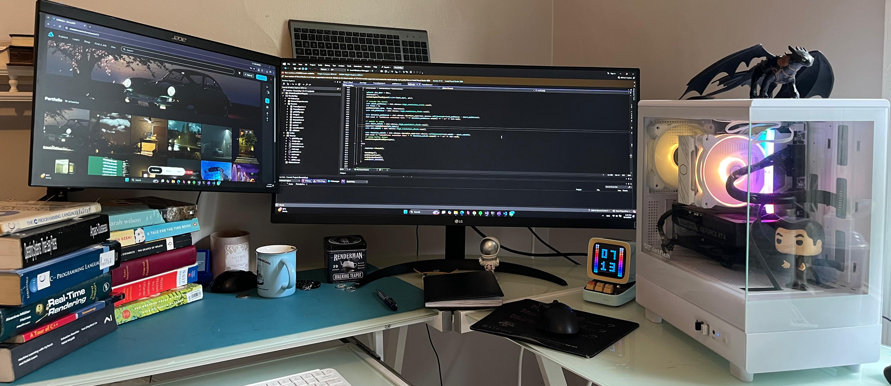

this is Ahmed, as a kid I have played plenty of video games on a really old pc, if I am not mistaken it had a pentium 4 and 512mb of ddr2 ram with some ati graphics card with 32mb of vram, but that's beside the point. The point is it was a mericle that that thing could run anything made after 2010 which is around the time I had used it, and certainly not something as complex as a videogame tldr; I loved graphics, I loved them because they pushed the hardware, and I always wanted to know exactly how things are built from the grounds up (or atleast close enough to that) which is why I took two years to figure out whether I wanted to be an electrical engineer or a computer scientist. The electrical engineer starts from first principles , where as the computer scientist abstracts more but can therefore do more complex things. Anyway graphics be it as beautiful as they are, are not the only thing that interested me. I love all that sits at the intersection between hardware and software, above all I love performance. Modern hardware is very strong And my opinion is that engineering is about solving problems albeit in efficient ways. This is what I love to do, be it in graphics, Machine learning, or other areas.
A Real Time GPU Path Tracer.
A Real Time GPU Path Tracer to simulate light transport in a physically-based manner.
A real time simulation of flocking birds on a GPU.
A real time simulation of flocking birds on a GPU.
A real time simulation of fluids on the GPU.
A real time simulation of fluids on the GPU based on the Navier-Stokes equations through smoothed particle Hydrodynamics.
A real time graphics & physics engine, a.k.a: a game engine.
A real time graphics & physics engine, a.k.a: a game engine.
A tiny CAD.
A tiny CAD.
